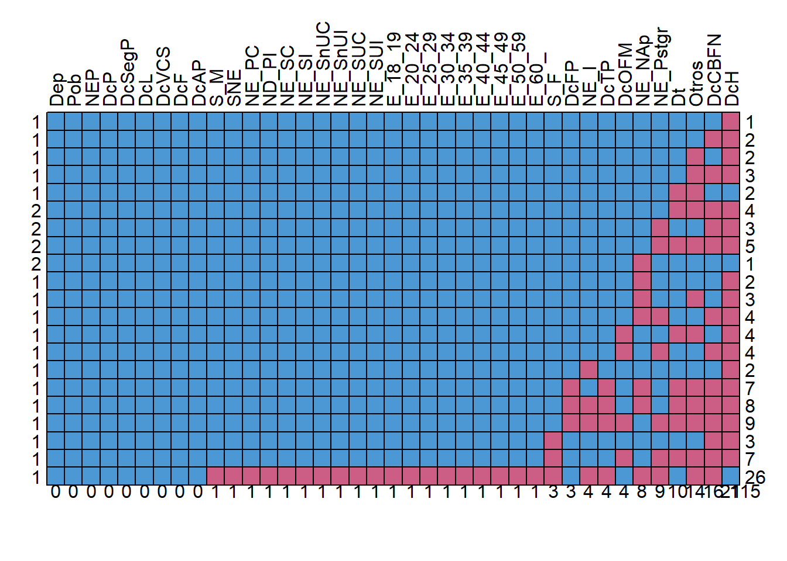
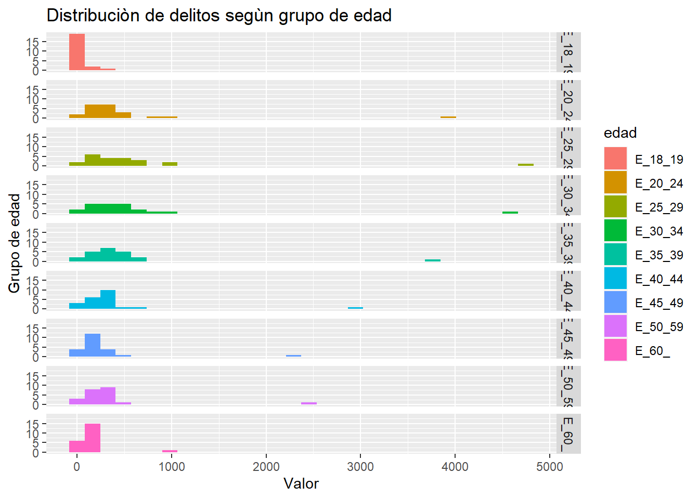
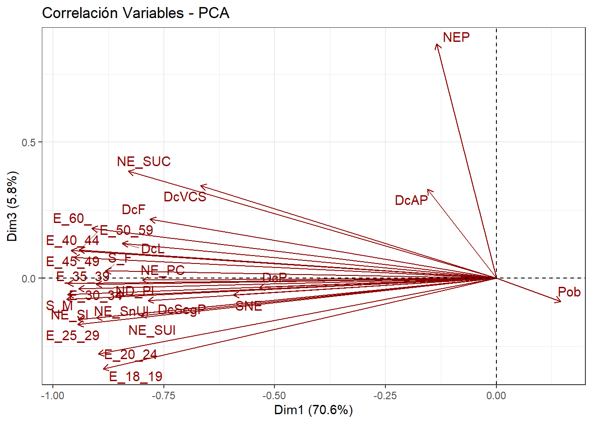
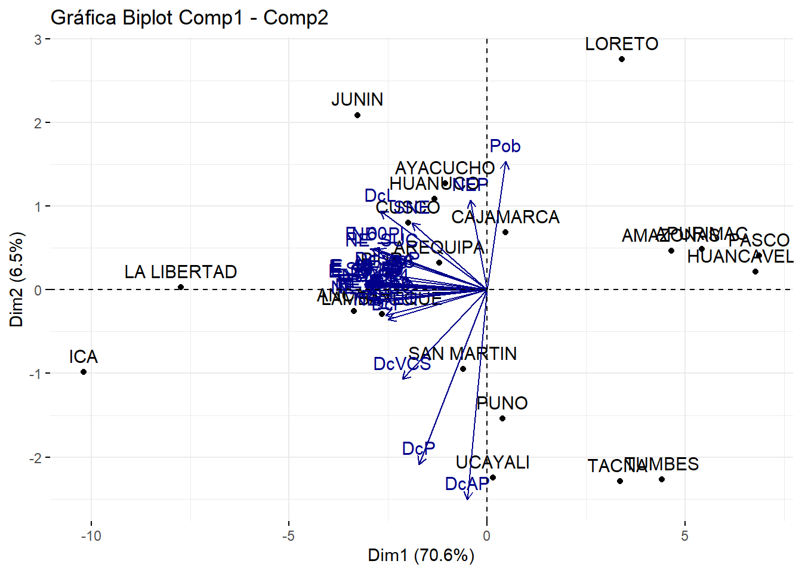
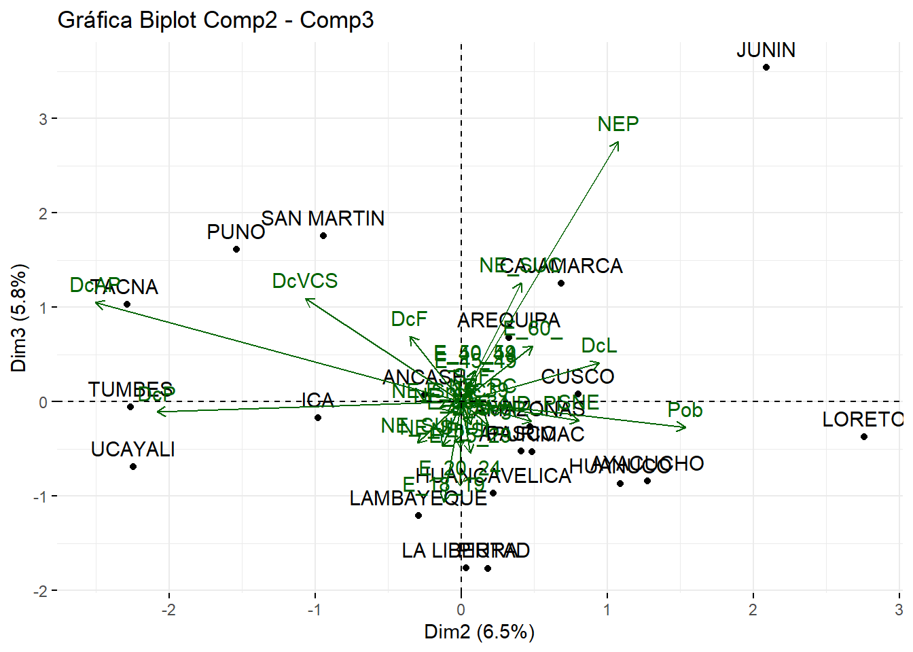
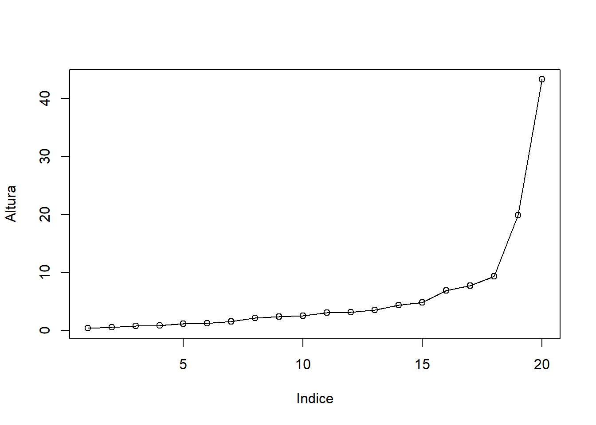

5 PROCESO DE ANÁLISIS DE LOS DATOS
5.1 Análisis Exploratorio de Datos
Para el presente análisis usamos la data descargada anteriormente, las cuales exploraremos y ordenaremos adecuadamente dichos datos.
5.1.1 Importamos los datos
Cargamos los datos crudos y visualizamos los datos en desorden, y con valores NA, las cuales limpiamos y tranformamos.
Primeramente reducimos el nombre de nuestras variables paara una mejor visualización
names(data0) <- c("Dep","Pob","NEP",
"S_F","S_M","SNE",
"NE_I","NE_PC","ND_PI",
"NE_SC","NE_SI","NE_SnUC",
"NE_SnUI","NE_SUC","NE_SUI",
"NE_Pstgr","NE_NAp","DcP",
"DcSegP","DcL","DcVCS",
"DcF","DcAP","DcTP",
"DcOFM","DcFP","Dt",
"DcCBFN","DcH","Otros",
"E_18_19","E_20_24","E_25_29",
"E_30_34","E_35_39","E_40_44",
"E_45_49","E_50_59","E_60_")
#View(data0)
tibble(data0)## # A tibble: 25 x 39
## Dep Pob NEP S_F S_M SNE NE_I NE_PC ND_PI NE_SC NE_SI NE_SnUC
## <chr> <int> <int> <int> <int> <int> <int> <int> <int> <int> <int> <int>
## 1 AMAZONAS 3.79e5 2 35 824 35 3 139 265 165 184 24
## 2 ANCASH 1.08e6 2 156 3179 3 3 316 529 834 1164 125
## 3 APURIMAC 4.06e5 2 61 549 21 NA 65 128 166 168 15
## 4 AREQUIPA 1.38e6 3 158 2226 48 NA 167 310 693 659 159
## 5 AYACUCHO 6.16e5 2 192 2347 89 5 284 527 638 733 88
## 6 CAJAMAR~ 1.34e6 4 107 1867 110 3 341 441 416 399 70
## 7 CALLAO 9.94e5 1 NA 3199 16 4 196 227 869 990 102
## 8 CUSCO 1.21e6 3 186 2586 70 3 230 530 801 727 91
## 9 HUANCAV~ 3.48e5 1 9 191 3 NA 22 39 54 42 17
## 10 HUANUCO 7.21e5 1 162 2392 145 8 290 643 564 650 57
## # ... with 15 more rows, and 27 more variables: NE_SnUI <int>, NE_SUC <int>,
## # NE_SUI <int>, NE_Pstgr <int>, NE_NAp <int>, DcP <int>, DcSegP <int>,
## # DcL <int>, DcVCS <int>, DcF <int>, DcAP <int>, DcTP <int>, DcOFM <int>,
## # DcFP <int>, Dt <int>, DcCBFN <int>, DcH <int>, Otros <int>, E_18_19 <int>,
## # E_20_24 <int>, E_25_29 <int>, E_30_34 <int>, E_35_39 <int>, E_40_44 <int>,
## # E_45_49 <int>, E_50_59 <int>, E_60_ <int>5.1.2 Eliminar NA
Se evalua los Missing Values en la data ya que no deben ser el mayor porcentaje del total.

## Dep Pob NEP DcP DcSegP DcL DcVCS DcF DcAP S_M SNE NE_PC ND_PI NE_SC NE_SI
## 1 1 1 1 1 1 1 1 1 1 1 1 1 1 1 1
## 1 1 1 1 1 1 1 1 1 1 1 1 1 1 1 1
## 1 1 1 1 1 1 1 1 1 1 1 1 1 1 1 1
## 1 1 1 1 1 1 1 1 1 1 1 1 1 1 1 1
## 1 1 1 1 1 1 1 1 1 1 1 1 1 1 1 1
## 2 1 1 1 1 1 1 1 1 1 1 1 1 1 1 1
## 2 1 1 1 1 1 1 1 1 1 1 1 1 1 1 1
## 2 1 1 1 1 1 1 1 1 1 1 1 1 1 1 1
## 2 1 1 1 1 1 1 1 1 1 1 1 1 1 1 1
## 1 1 1 1 1 1 1 1 1 1 1 1 1 1 1 1
## 1 1 1 1 1 1 1 1 1 1 1 1 1 1 1 1
## 1 1 1 1 1 1 1 1 1 1 1 1 1 1 1 1
## 1 1 1 1 1 1 1 1 1 1 1 1 1 1 1 1
## 1 1 1 1 1 1 1 1 1 1 1 1 1 1 1 1
## 1 1 1 1 1 1 1 1 1 1 1 1 1 1 1 1
## 1 1 1 1 1 1 1 1 1 1 1 1 1 1 1 1
## 1 1 1 1 1 1 1 1 1 1 1 1 1 1 1 1
## 1 1 1 1 1 1 1 1 1 1 1 1 1 1 1 1
## 1 1 1 1 1 1 1 1 1 1 1 1 1 1 1 1
## 1 1 1 1 1 1 1 1 1 1 1 1 1 1 1 1
## 1 1 1 1 1 1 1 1 1 1 0 0 0 0 0 0
## 0 0 0 0 0 0 0 0 0 1 1 1 1 1 1
## NE_SnUC NE_SnUI NE_SUC NE_SUI E_18_19 E_20_24 E_25_29 E_30_34 E_35_39 E_40_44
## 1 1 1 1 1 1 1 1 1 1 1
## 1 1 1 1 1 1 1 1 1 1 1
## 1 1 1 1 1 1 1 1 1 1 1
## 1 1 1 1 1 1 1 1 1 1 1
## 1 1 1 1 1 1 1 1 1 1 1
## 2 1 1 1 1 1 1 1 1 1 1
## 2 1 1 1 1 1 1 1 1 1 1
## 2 1 1 1 1 1 1 1 1 1 1
## 2 1 1 1 1 1 1 1 1 1 1
## 1 1 1 1 1 1 1 1 1 1 1
## 1 1 1 1 1 1 1 1 1 1 1
## 1 1 1 1 1 1 1 1 1 1 1
## 1 1 1 1 1 1 1 1 1 1 1
## 1 1 1 1 1 1 1 1 1 1 1
## 1 1 1 1 1 1 1 1 1 1 1
## 1 1 1 1 1 1 1 1 1 1 1
## 1 1 1 1 1 1 1 1 1 1 1
## 1 1 1 1 1 1 1 1 1 1 1
## 1 1 1 1 1 1 1 1 1 1 1
## 1 1 1 1 1 1 1 1 1 1 1
## 1 0 0 0 0 0 0 0 0 0 0
## 1 1 1 1 1 1 1 1 1 1
## E_45_49 E_50_59 E_60_ S_F DcFP NE_I DcTP DcOFM NE_NAp NE_Pstgr Dt Otros
## 1 1 1 1 1 1 1 1 1 1 1 1 1
## 1 1 1 1 1 1 1 1 1 1 1 1 1
## 1 1 1 1 1 1 1 1 1 1 1 1 0
## 1 1 1 1 1 1 1 1 1 1 1 1 0
## 1 1 1 1 1 1 1 1 1 1 1 0 0
## 2 1 1 1 1 1 1 1 1 1 1 0 0
## 2 1 1 1 1 1 1 1 1 1 0 1 1
## 2 1 1 1 1 1 1 1 1 1 0 0 0
## 2 1 1 1 1 1 1 1 1 0 1 1 1
## 1 1 1 1 1 1 1 1 1 0 1 1 1
## 1 1 1 1 1 1 1 1 1 0 1 1 0
## 1 1 1 1 1 1 1 1 1 0 0 1 1
## 1 1 1 1 1 1 1 1 0 1 1 0 0
## 1 1 1 1 1 1 1 1 0 1 0 1 1
## 1 1 1 1 1 1 0 1 1 1 1 1 1
## 1 1 1 1 1 0 1 0 1 0 1 0 0
## 1 1 1 1 1 0 0 0 1 0 1 0 0
## 1 1 1 1 1 0 0 0 0 1 0 0 0
## 1 1 1 1 0 1 1 1 1 1 1 1 1
## 1 1 1 1 0 1 1 1 0 1 0 0 0
## 1 0 0 0 0 1 0 0 1 0 0 1 0
## 1 1 1 3 3 4 4 4 8 9 10 14
## DcCBFN DcH
## 1 1 0 1
## 1 0 0 2
## 1 1 0 2
## 1 0 0 3
## 1 1 1 2
## 2 0 0 4
## 2 0 0 3
## 2 0 0 5
## 2 1 1 1
## 1 1 0 2
## 1 1 0 3
## 1 0 0 4
## 1 1 0 4
## 1 0 0 4
## 1 1 0 2
## 1 0 0 7
## 1 0 0 8
## 1 0 0 9
## 1 0 0 3
## 1 0 0 7
## 1 0 1 26
## 16 21 115Observando el grafico, se entiende que para la primera fila hay una observacion que tiene NA en la variable DcH en la segunda fila,hay una observacion que tiene NA en DcBFN y DcH, así sucesivamente hasta llegar a la ultima fila, donde una observacion tiene 26 NA, el cual definitivamente se eliminara.
5.1.3 Eliminar filas
Las variables principales que son sustento base de que existen los datos y son reales, vienen a ser cinco, la variable poblacion, establecimientos penitenciarios, mujeres y varones, es por ello que si alguno no tiene datos, procedera a ser eliminado
data0 <- data0[!is.na(data0$Pob),]
data0 <- data0[!is.na(data0$NEP),]
data0 <- data0[!is.na(data0$S_F),]
data0 <- data0[!is.na(data0$S_M),]
tibble(data0) %>% print(n=26)## # A tibble: 22 x 39
## Dep Pob NEP S_F S_M SNE NE_I NE_PC ND_PI NE_SC NE_SI NE_SnUC
## <chr> <int> <int> <int> <int> <int> <int> <int> <int> <int> <int> <int>
## 1 "AMAZON~ 3.79e5 2 35 824 35 3 139 265 165 184 24
## 2 "ANCASH" 1.08e6 2 156 3179 3 3 316 529 834 1164 125
## 3 "APURIM~ 4.06e5 2 61 549 21 NA 65 128 166 168 15
## 4 "AREQUI~ 1.38e6 3 158 2226 48 NA 167 310 693 659 159
## 5 "AYACUC~ 6.16e5 2 192 2347 89 5 284 527 638 733 88
## 6 "CAJAMA~ 1.34e6 4 107 1867 110 3 341 441 416 399 70
## 7 "CUSCO" 1.21e6 3 186 2586 70 3 230 530 801 727 91
## 8 "HUANCA~ 3.48e5 1 9 191 3 NA 22 39 54 42 17
## 9 "HUANUC~ 7.21e5 1 162 2392 145 8 290 643 564 650 57
## 10 "ICA" 8.51e5 2 302 4971 72 3 312 578 1665 1831 236
## 11 "JUNIN" 1.25e6 7 180 2861 84 14 320 613 803 840 90
## 12 "LA LIB~ 1.78e6 2 283 4471 124 9 589 905 1084 1518 154
## 13 "LAMBAY~ 1.20e6 1 163 3000 94 5 373 548 791 999 103
## 14 "LIMA" 1.78e7 10 1884 24140 281 29 1740 2873 7452 9391 979
## 15 "LORETO" 3.69e7 3 74 1172 53 1 136 259 285 351 36
## 16 "PASCO" 2.53e6 2 14 181 4 1 10 26 81 39 6
## 17 "PIURA" 3.59e6 1 94 3098 84 1 310 619 805 1000 123
## 18 "PUNO" 1.17e6 3 190 1597 37 2 200 298 556 403 66
## 19 "SAN MA~ 8.13e5 4 62 2221 92 6 422 564 398 560 86
## 20 "TACNA " 3.29e5 3 110 992 24 2 75 156 314 335 45
## 21 "TUMBES" 2.25e5 1 37 823 27 83 156 201 297 23 21
## 22 "UCAYAL~ 4.96e5 1 104 1949 65 1 207 413 456 690 60
## # ... with 27 more variables: NE_SnUI <int>, NE_SUC <int>, NE_SUI <int>,
## # NE_Pstgr <int>, NE_NAp <int>, DcP <int>, DcSegP <int>, DcL <int>,
## # DcVCS <int>, DcF <int>, DcAP <int>, DcTP <int>, DcOFM <int>, DcFP <int>,
## # Dt <int>, DcCBFN <int>, DcH <int>, Otros <int>, E_18_19 <int>,
## # E_20_24 <int>, E_25_29 <int>, E_30_34 <int>, E_35_39 <int>, E_40_44 <int>,
## # E_45_49 <int>, E_50_59 <int>, E_60_ <int>Como se observa, la cantidad de departamentos se redujo, se elimino al Callao, Moquegua y Madre de Dios
5.1.4 Eliminar columnas
Teniendo todos los departamentos con la data principal, se procede a analizar las varibles, teniendo en cuenta que no podemos trabajar con NA,se procedera a eliminar aquellas columnas que la contengan.
Examinamos cuantos NA tiene cada columna para darnos una idea
## Dep Pob NEP S_F S_M SNE NE_I NE_PC
## 0 0 0 0 0 0 3 0
## ND_PI NE_SC NE_SI NE_SnUC NE_SnUI NE_SUC NE_SUI NE_Pstgr
## 0 0 0 0 0 0 0 7
## NE_NAp DcP DcSegP DcL DcVCS DcF DcAP DcTP
## 7 0 0 0 0 0 0 3
## DcOFM DcFP Dt DcCBFN DcH Otros E_18_19 E_20_24
## 3 3 9 13 19 12 0 0
## E_25_29 E_30_34 E_35_39 E_40_44 E_45_49 E_50_59 E_60_
## 0 0 0 0 0 0 0Eliminamos todas las columnas que tienen al menos un NA
## Dep Pob NEP S_F S_M SNE NE_I NE_PC
## 0.0000000 0.0000000 0.0000000 0.0000000 0.0000000 0.0000000 0.1363636 0.0000000
## ND_PI NE_SC NE_SI NE_SnUC NE_SnUI NE_SUC NE_SUI NE_Pstgr
## 0.0000000 0.0000000 0.0000000 0.0000000 0.0000000 0.0000000 0.0000000 0.3181818
## NE_NAp DcP DcSegP DcL DcVCS DcF DcAP DcTP
## 0.3181818 0.0000000 0.0000000 0.0000000 0.0000000 0.0000000 0.0000000 0.1363636
## DcOFM DcFP Dt DcCBFN DcH Otros E_18_19 E_20_24
## 0.1363636 0.1363636 0.4090909 0.5909091 0.8636364 0.5454545 0.0000000 0.0000000
## E_25_29 E_30_34 E_35_39 E_40_44 E_45_49 E_50_59 E_60_
## 0.0000000 0.0000000 0.0000000 0.0000000 0.0000000 0.0000000 0.0000000## # A tibble: 22 x 29
## Dep Pob NEP S_F S_M SNE NE_PC ND_PI NE_SC NE_SI NE_SnUC NE_SnUI
## <chr> <int> <int> <int> <int> <int> <int> <int> <int> <int> <int> <int>
## 1 "AMAZ~ 3.79e5 2 35 824 35 139 265 165 184 24 16
## 2 "ANCA~ 1.08e6 2 156 3179 3 316 529 834 1164 125 87
## 3 "APUR~ 4.06e5 2 61 549 21 65 128 166 168 15 13
## 4 "AREQ~ 1.38e6 3 158 2226 48 167 310 693 659 159 127
## 5 "AYAC~ 6.16e5 2 192 2347 89 284 527 638 733 88 62
## 6 "CAJA~ 1.34e6 4 107 1867 110 341 441 416 399 70 44
## 7 "CUSC~ 1.21e6 3 186 2586 70 230 530 801 727 91 102
## 8 "HUAN~ 3.48e5 1 9 191 3 22 39 54 42 17 6
## 9 "HUAN~ 7.21e5 1 162 2392 145 290 643 564 650 57 59
## 10 "ICA" 8.51e5 2 302 4971 72 312 578 1665 1831 236 233
## 11 "JUNI~ 1.25e6 7 180 2861 84 320 613 803 840 90 78
## 12 "LA L~ 1.78e6 2 283 4471 124 589 905 1084 1518 154 159
## 13 "LAMB~ 1.20e6 1 163 3000 94 373 548 791 999 103 94
## 14 "LIMA" 1.78e7 10 1884 24140 281 1740 2873 7452 9391 979 962
## 15 "LORE~ 3.69e7 3 74 1172 53 136 259 285 351 36 38
## 16 "PASC~ 2.53e6 2 14 181 4 10 26 81 39 6 5
## 17 "PIUR~ 3.59e6 1 94 3098 84 310 619 805 1000 123 134
## 18 "PUNO" 1.17e6 3 190 1597 37 200 298 556 403 66 51
## 19 "SAN ~ 8.13e5 4 62 2221 92 422 564 398 560 86 52
## 20 "TACN~ 3.29e5 3 110 992 24 75 156 314 335 45 35
## 21 "TUMB~ 2.25e5 1 37 823 27 156 201 297 23 21 11
## 22 "UCAY~ 4.96e5 1 104 1949 65 207 413 456 690 60 73
## # ... with 17 more variables: NE_SUC <int>, NE_SUI <int>, DcP <int>,
## # DcSegP <int>, DcL <int>, DcVCS <int>, DcF <int>, DcAP <int>, E_18_19 <int>,
## # E_20_24 <int>, E_25_29 <int>, E_30_34 <int>, E_35_39 <int>, E_40_44 <int>,
## # E_45_49 <int>, E_50_59 <int>, E_60_ <int>De 39 variables se eliminaron 10. Ahora verificamos que nuestra data no tenga NA
## /\ /\
## { `---' }
## { O O }
## ==> V <== No need for mice. This data set is completely observed.
## \ \|/ /
## `-----'## Dep Pob NEP S_F S_M SNE NE_PC ND_PI NE_SC NE_SI NE_SnUC NE_SnUI NE_SUC
## 22 1 1 1 1 1 1 1 1 1 1 1 1 1
## 0 0 0 0 0 0 0 0 0 0 0 0 0
## NE_SUI DcP DcSegP DcL DcVCS DcF DcAP E_18_19 E_20_24 E_25_29 E_30_34 E_35_39
## 22 1 1 1 1 1 1 1 1 1 1 1 1
## 0 0 0 0 0 0 0 0 0 0 0 0
## E_40_44 E_45_49 E_50_59 E_60_
## 22 1 1 1 1 0
## 0 0 0 0 05.1.5 Gráfico resumen
Mostramos porcentaje de Delitos en todo el Perú, después de la limpieza de datos.
#glimpse(data1)
total <- dplyr::select(data1,15:20)
suma <- colSums (total)
porcent <- cbind(suma,prop = prop.table(suma))*100
grafico <- data.frame(porcent)
grafico## suma prop
## DcP 3821900 48.259969
## DcSegP 1784000 22.526959
## DcL 1354200 17.099780
## DcVCS 693300 8.754451
## DcF 164900 2.082228
## DcAP 101100 1.276612etiquetas <- c("48.25% DcP","22.52% DcSegP","17.09% DcL","8.75% DcVCS","2.08% DcF","1.27% DcAP")
pie(grafico$prop , col=rainbow(length(grafico$prop)),
labels = etiquetas,
main = "Delitos en Perú",
sub = "Evaluación de la cantidad de delitos registrados por tipo.")
legend("topleft",
c("D. C. patrominio",
"D. C. la seguridad publica",
"D. C. la libertad",
"D. C. la vida, el cuerpo y la salud",
"D. C. la familia",
"D. C. la administracion publica"),
cex = 0.5,
fill = rainbow(length(grafico$prop)))
En el grafico observamos que el Delito contra el patrimonio es el que mas se da a nivel Nacional, seguido por el Delito contra la seguridad publica, estos dos abarcan casi el 70% del total ya que van de la mano, la inseguridad en las calles genera robos, extorsion, etc
Mostramos porcentaje del nivel de educaciòn
educacion <- dplyr::select(data1,6:14)
tot <- colSums(educacion)
perEDUC<- (cbind(tot,percent = prop.table(tot))*100) %>%
data.frame() %>% summarise(etiquet = c ("SNE",
"NE_PC",
"NE_PI",
"NE_SC",
"NE_SI",
"NE_SnUC",
"NE_SnIU",
"NE_SUC",
"NE_SUI"),
percent=round(percent,2),
total = tot,
leyd = sprintf("%1s( %1s)" ,etiquet, percent))
pie(perEDUC$percent , col=rainbow(length(perEDUC$percent)),
labels = perEDUC$leyd,
main = "Delitos en Perú segùn nivel de estudio",
sub = "Evaluación según nivel de estudio")
legend("topleft",
perEDUC$etiquet,
cex = 0.5,
fill = rainbow(length(perEDUC$percent)))En el grafico observamos que el nivel de estudio en el que se comete mas delitos son aquellas personas con secundaria incompleta (32.26%) , seguido de las personas con secundaria completa(27.45 %), mientras que el mas bajo son aquel grupo sin nivel de educaciòn.
Mostramos los datos segun rango de edad
edades <- dplyr::select(data1, 21:29)
totale <- edades %>% colSums()
perEDAD<- (cbind(totale,percent = prop.table(totale))*100) %>%
data.frame() %>% summarise(etiquet = c ("E_18_19",
"E_20_24",
"E_25_29",
"E_30_34",
"E_35_39",
"E_40_44",
"E_45_49",
"E_50_59",
"E_60_"),
percent=round(percent,2),
total = totale,
leyd = sprintf("%1s( %1s)" ,etiquet, percent))
pie(perEDAD$percent , col=rainbow(length(perEDAD$percent)),
labels = perEDAD$leyd,
main = "Delitos en Perú segùn rango de edad",
sub = "Evaluación según rango de edad")
legend("topleft",
perEDAD$etiquet,
cex = 0.5,
fill = rainbow(length(perEDAD$percent)))
En el grafico observamos que los rangos de edades en los que se comete màs delitos son los comprendidos entre 25 y 29 años con 18.83%, seguido de las edades comprendidas entre 30 y 34 años, mientras que el porcentaje mas bajo con 1.6% son el grupo comprendido entre los 18-19 años .
5.1.6 Anlizando las variables
Analizemos segun sexo
sexo <- dplyr::select(data1,1,4:5)
ki<- melt(sexo)
ggplot(data = ki , mapping = aes(x = Dep, y= value , fill= variable))+
geom_col(position="dodge")+ # el valor de la observacion es el de la barra
labs(title = "Comparaciòn por sexo",
x = "Departamento",
y = "valor")+
theme(axis.text.x = element_text(angle = 20, size = 6,hjust = 1, vjust = 1)) En el gràfico podemos observar que el numero de varones es mucho mayor que las mujeres en todos los departamentos.
En el gràfico podemos observar que el numero de varones es mucho mayor que las mujeres en todos los departamentos.
Tipo de delito
is_outlier <- function(x) {
return(x < quantile(x, 0.25) - 1.5 * IQR(x) | x > quantile(x, 0.75) + 1.5 * IQR(x))
}
delit<- data1 %>% dplyr::select(1,15:20) %>%
pivot_longer(-Dep, names_to = "delitos", values_to = "Valor") %>%
group_by(delitos) %>%
summarise(delitos,Valor, Dep ,
outlier = ifelse(is_outlier(Valor),
sprintf("%1s( %1s)" ,Valor, Dep),
as.numeric(NA)))
ggplot(delit , mapping = aes( x = factor(delitos) , y = Valor , fill = delitos))+
stat_boxplot(geom = "errorbar", # Error bars
width = 0.25) + # Bars width
geom_boxplot(alpha = 0.8, # Transparencia
colour = "#474747", # Color del borde
outlier.colour = 1)+
ggtitle ("Evaluacion de delitos \nSegun el tipo de delito")+
theme(panel.background = element_rect(fill = "beige"),
plot.title = element_text(family="Comic Sans MS",
size=rel(2), #Tamaño relativo de la letra del título
vjust=2, #Justificación vertical, para separarlo del gráfico
face="bold", #Letra negrilla. Otras posibilidades "plain", "italic", "bold" y "bold.italic"
color="blue", #Color del texto
lineheight=1.5))+
scale_fill_hue(labels =c("D. C. la administracion publica",
"D. C. la familia",
"D. C. la libertad",
"D. C. patrominio",
"D. C. la seguridad publica",
"D. C. la vida, el cuerpo y la salud"))+
geom_text(aes(label = outlier), na.rm = TRUE, hjust = -0.3)
En este grafico de cajas podemos observar que, la caja que representa al número de personas que cometen el delito contra el patrimonio (color celeste) es mayor que el de los otros delitos, a este tipo de delito le sigue el delito contra la familia y el delito contra la seguridad pública, la mediana se muestra en el centro, lo que indica que hay simetría en la distribución de número de personas, notamos también un valor atípico extremo muy alejado en la caja que representa al delito contra el patrimonio, lo que indicaría que en un momento dado, el número de personas que cometieron el delito contra el patrimonio supero los 12000, lo que nos indica que se trata de la provincia de Lima.
ggplot(delit, mapping = aes(x = Valor)) +
geom_histogram( aes(fill = delitos)) +
labs(title = "Distribuciòn de delitos segùn tipo",
y = "Tipo de delito") +
facet_grid(vars(delitos))## `stat_bin()` using `bins = 30`. Pick better value with `binwidth`.
En esta grafica podemos notar que el delito que presenta mayor distribución en número de veces que los cometen es el delito contra el patrimonio, que es el delito que atenta contra los bienes de una persona. La distribución de los delitos contra la administración pública y delitos contra la familia se muestra como un delito cometido pocas veces.
Nivel de Educaciòn
educ<- data1 %>% dplyr::select(1,6:14) %>%
pivot_longer(-Dep, names_to = "N.educ", values_to = "Valor") %>%
group_by(N.educ) %>%
summarise(N.educ,Valor, Dep , outlier = ifelse(is_outlier(Valor),
sprintf("%1s( %1s)" ,Valor, Dep),
as.numeric(NA)))
ggplot( educ, mapping = aes( x = N.educ , y = Valor , fill = N.educ))+
stat_boxplot(geom = "errorbar",
width = 0.25) +
geom_boxplot(alpha = 0.8, # Transparencia
colour = "#474747", # Color del borde
outlier.colour = 1) + # Color atípicos
theme(
panel.background = element_rect(fill = "beige")
)+ geom_text(aes(label = outlier), na.rm = TRUE, hjust = -0.3)
En la gráfica podemos apreciar el nivel de educación de las personas que han cometido los distintos tipos de delitos, siendo el rango de las personas con secundaria incompleta (color verde) las que se han vistos involucrados en delitos más que en los demás niveles de educación, seguido de las personas con secundaria completa y personas con primaria incompleta.
ggplot(educ, mapping = aes(x = Valor)) +
geom_histogram( aes(fill = N.educ)) +
labs(title = "Distribuciòn de delitos segùn nivel de educaciòn",
y = "Nivel de educaciòn") +
facet_grid(vars(N.educ))## `stat_bin()` using `bins = 30`. Pick better value with `binwidth`.
Podemos apreciar que la población que cuenta con un nivel educativo de secundaria incompleta tiene mayor distribución en cuanto a número de delitos cometidos, seguido de personas con un nivel educativo de secundaria completa y primaria incompleta.
Analicemos la edad
edad1 <-data1 %>% dplyr::select(1,21:29) %>%
pivot_longer(-Dep, names_to = "edad", values_to = "Valor") %>%
group_by(edad) %>%
summarise(edad,Valor, Dep,
outlier = ifelse(is_outlier(Valor),
sprintf("%1s( %1s)" ,Valor, Dep),
as.numeric(NA)))
ggplot(edad1, mapping = aes( x = edad , y = Valor , fill = edad))+
stat_boxplot(geom = "errorbar",
width = 0.25) +
geom_boxplot(alpha = 0.8, # Transparencia
colour = "#474747", # Color del borde
outlier.colour = 1) +
ggtitle ("Evaluacion de delitos \nSegun grupo de edad")+# Color atípicos
theme(
panel.background = element_rect(fill = "beige"),
plot.title = element_text(family="Comic Sans MS",
size=rel(2), #Tamaño relativo de la letra del título
vjust=2, #Justificación vertical, para separarlo del gráfico
face="bold", #Letra negrilla. Otras posibilidades "plain", "italic", "bold" y "bold.italic"
color="blue", #Color del texto
lineheight=1.5)
)+geom_text(aes(label = outlier), na.rm = TRUE, hjust = -0.3)En la gráfica se muestra el número de delitos cometidos y su relación con el grupo etario notando que el grupo que comete más delitos es el que se encuentra en el rango de 25 a 29 años, seguido de las personas que se encuentran entre los 30 a 34 años, y los que tienen de 20 a 24 años.
ggplot(edad1, mapping = aes(x = Valor)) +
geom_histogram( aes(fill = edad)) +
labs(title = "Distribuciòn de delitos segùn grupo de edad",
y = "Grupo de edad") +
facet_grid(vars(edad))## `stat_bin()` using `bins = 30`. Pick better value with `binwidth`.
La distribución de los delitos según el grupo etario nos permite corroborar lo dicho en el grafico anterior, el grupo que se encuentra entre los 30 a 34 años tienen datos distribuidos a lo largo del eje de números de delitos
Analicemos la data sin Lima
Tipos de delitos
delit2<- data2 %>% dplyr::select(1,15:20) %>%
pivot_longer(-Dep, names_to = "delitos", values_to = "Valor") %>%
group_by(delitos) %>%
summarise(delitos,Valor, Dep)
ggplot(delit2 , mapping = aes( x = delitos , y = Valor , fill = delitos))+
stat_boxplot(geom = "errorbar", # Error bars
width = 0.25) + # Bars width
geom_boxplot(alpha = 0.8, # Transparencia
colour = "#474747", # Color del borde
outlier.colour = 1)+
ggtitle ("Evaluacion de delitos \nSegun el tipo de delito")+
theme(panel.background = element_rect(fill = "beige"),
plot.title = element_text(family="Comic Sans MS",
size=rel(2), #Tamaño relativo de la letra del título
vjust=2, #Justificación vertical, para separarlo del gráfico
face="bold", #Letra negrilla. Otras posibilidades "plain", "italic", "bold" y "bold.italic"
color="blue", #Color del texto
lineheight=1.5))+
scale_fill_hue(labels =c("D. C. la administracion publica",
"D. C. la familia",
"D. C. la libertad",
"D. C. patrominio",
"D. C. la seguridad publica",
"D. C. la vida, el cuerpo y la salud"))En este grafico se evalua los delitos según su tipo, sin considerar a Lima, lo cual nos indica que el mayor rango lo tiene el delito contra el patrimonio, esta vez el valor atípico no se muestra muy distante y no llega a pasar de los 4000 delitos.
ggplot(delit2, mapping = aes(x = Valor)) +
geom_histogram( aes(fill = delitos)) +
labs(title = "Distribuciòn de delitos segùn tipo",
y = "Tipo de delito") +
facet_grid(vars(delitos))## `stat_bin()` using `bins = 30`. Pick better value with `binwidth`.En la gráfica apreciamos que los datos del delito contra el patrimonio es mayor están más distribuidos que cualquier otro delito, seguido del delito de seguridad pública.
Nivel de Educaciòn
educ2<- data2 %>% dplyr::select(1,6:14) %>%
pivot_longer(-Dep, names_to = "N.educ", values_to = "Valor") %>%
group_by(N.educ) %>%
summarise(N.educ,Valor, Dep)
ggplot( educ2, mapping = aes( x = N.educ , y = Valor , fill = N.educ))+
stat_boxplot(geom = "errorbar",
width = 0.25) +
geom_boxplot(alpha = 0.8, # Transparencia
colour = "#474747", # Color del borde
outlier.colour = 1) + # Color atípicos
theme(
panel.background = element_rect(fill = "beige")
)Según este gráfico, podemos apreciar que el rango de delitos es mayor en la población que tiene secundaria completa con la mediana que nos indica una simetría entre los datos recogidos, también están el grupo que tiene un nivel educativo de secundaria incompleta.
ggplot(educ2, mapping = aes(x = Valor)) +
geom_histogram( aes(fill = N.educ)) +
labs(title = "Distribuciòn de delitos segùn nivel de educaciòn",
y = "Nivel de educaciòn") +
facet_grid(vars(N.educ))## `stat_bin()` using `bins = 30`. Pick better value with `binwidth`.En la gráfica presentada vemos que el grupo con un nivel educativo de secundaria incompleta se muestra más distribuido a lo largo del eje de números de delitos seguido de los que tienen un nivel educativo de secundaria completa.
Analicemos la edad
edad2 <-data2 %>% dplyr::select(1,21:29) %>%
pivot_longer(-Dep, names_to = "edad", values_to = "Valor") %>%
group_by(edad) %>%
summarise(edad,Valor, Dep)
ggplot(edad2, mapping = aes( x = edad , y = Valor , fill = edad))+
stat_boxplot(geom = "errorbar",
width = 0.25) +
geom_boxplot(alpha = 0.8, # Transparencia
colour = "#474747", # Color del borde
outlier.colour = 1) +
ggtitle ("Evaluacion de delitos \nSegun grupo de edad")+# Color atípicos
theme(
panel.background = element_rect(fill = "beige"),
plot.title = element_text(family="Comic Sans MS",
size=rel(2), #Tamaño relativo de la letra del título
vjust=2, #Justificación vertical, para separarlo del gráfico
face="bold", #Letra negrilla. Otras posibilidades "plain", "italic", "bold" y "bold.italic"
color="blue", #Color del texto
lineheight=1.5)
)Sin contar a Lima podemos notar que el rango intercuartlico es más apreciable en todos los grupos etarios siendo los más resaltantes las personas que se encuentra entre los 25 a 29 años y los de 30 a 34 años, la mediana se sitúa casi en el centro de la caja por lo que podríamos decir que la distribución es simétrica.
ggplot(edad2, mapping = aes(x = Valor)) +
geom_histogram( aes(fill = edad)) +
labs(title = "Dsitribuciòn de delitos segùn rango de edad",
y = "Grupo de edad") +
facet_grid(vars(edad))## `stat_bin()` using `bins = 30`. Pick better value with `binwidth`.
En la gráfica presentada vemos que el grupo etario que se muestra más distribuido a lo largo del eje de números de delitos son los que están entre los 25 a 29 años seguidos de los que tienen entre 20 a 24 años, lo que indicaría que los delitos cometidos por ambos grupos etarios sobrepasan los 1000 delitos
5.2 Análisis de Componentes Principales
Con la data anteriormente explorada y verificada, procedemosa realizar los siguientes procedimientos.
5.2.1 Justificación del Análisis de Componentes Principales
Antes de empezar con el Análisis de Componentes Principales, debemos asegurarnos que nuestras variables cumplan con la caracteristica de multicolinealidad, ello se observa en la alta correlación que existe entre ellas.
Para ello procedemos a nombrar nuestras filas con los nombres de los departamentos ya que no lo necesitamos en el análisis ya que es un dato de tipo caracter.
Para mostrar la correlación en nuestras variables primero estandarizamos nuestras variables y luego ploteamos la correlación.
sc_dat1 <- scale(data2)
pairs.panels(sc_dat1, gap = 0, pch = 21, stars = TRUE,
hist.col = 4, density = TRUE,
main = "Correlación entre variables"
)cor_dat1 <- cor(sc_dat1)
levelplot(
as.matrix(cor_dat1),
scales = list(x = list(rot = 90)),
col.regions =
cpt(
pal = "cb_seq_YlOrRd_09", n = 100, rev = F
),
main = "Correlación entre variables",
xlab = "Variables",
ylab = "Variables"
)En la gráfica anterior podemos observar niveles de correlación que van aproximadamente desde -0.2 a 1, donde en el rango de -0.2 a 0.4 aproximadamente se puede considerar correlación baja entre las variables, mientras que en adelante se puede considerar de regular a buena, observando la gráfica nos percatamos de que las casillas están pintadas en mayor cantidad de la tonalidad guinda, lo cual nos dice que existe la correlación de nuestras variables, con ella podemos justificar el Análisis de Componenetes Principales.
5.2.2 Proceso análisis del PCA
Para este análisis ejecutamos las siguientes líneas de código, en el cual la la función dudi.pca pertenece a la libreria de4.
A continuación veremos el resumen del análsis realizado anteriormente:
factoextra::get_eig(pca_dat1) %>% kable(caption="Resumen de PCA",
align = "c",
digits = 2) %>%
kable_material(html_font = "sans-serif") %>%
kable_styling(bootstrap_options = c("hover"))| eigenvalue | variance.percent | cumulative.variance.percent | |
|---|---|---|---|
| Dim.1 | 18.82 | 70.58 | 70.58 |
| Dim.2 | 1.74 | 6.52 | 77.10 |
| Dim.3 | 1.56 | 5.85 | 82.95 |
| Dim.4 | 1.37 | 5.13 | 88.08 |
| Dim.5 | 0.87 | 3.26 | 91.34 |
| Dim.6 | 0.83 | 3.09 | 94.44 |
| Dim.7 | 0.37 | 1.38 | 95.82 |
| Dim.8 | 0.32 | 1.21 | 97.03 |
| Dim.9 | 0.22 | 0.82 | 97.85 |
| Dim.10 | 0.17 | 0.64 | 98.48 |
| Dim.11 | 0.11 | 0.42 | 98.91 |
| Dim.12 | 0.11 | 0.39 | 99.30 |
| Dim.13 | 0.08 | 0.32 | 99.62 |
| Dim.14 | 0.04 | 0.14 | 99.75 |
| Dim.15 | 0.03 | 0.11 | 99.87 |
| Dim.16 | 0.02 | 0.09 | 99.95 |
| Dim.17 | 0.01 | 0.02 | 99.98 |
| Dim.18 | 0.00 | 0.02 | 99.99 |
| Dim.19 | 0.00 | 0.01 | 100.00 |
| Dim.20 | 0.00 | 0.00 | 100.00 |
En este resumen presentado podemos observar los autovalores de los 5 primeros componentes. Sabemos que uno de los objetivos de Análisis de Componentes Principales es reducir la dimensionalidad creando nuevas variabales que contengan la misma información que las variables originales, para reducir está dimensionalidad tenemos uno de los métodos, las cuales nos indican que se retienen las componentes cuyos componentes tengan autovalores mayores a 1, bajo ese criterio observamos que hay 4 autovalores mayores a 1 las cuales podrían ser retennidas, sin embargo seguiremos analizando con otros criterios.
Desglosamos la información de la siguiente manera. Obtenemos los valores propios:
## [1] 1.882258e+01 1.738326e+00 1.559808e+00 1.368499e+00 8.685314e-01
## [6] 8.250608e-01 3.690182e-01 3.233771e-01 2.179674e-01 1.694674e-01
## [11] 1.123446e-01 1.050819e-01 8.488351e-02 3.637089e-02 2.990117e-02
## [16] 2.319466e-02 5.692017e-03 4.227733e-03 1.546177e-03 7.892811e-04Obtenemos los vectores propios:
## CS1 CS2 CS3 CS4 CS5 CS6
## Pob 0.03346742 0.36308411 -0.067999116 -0.07114734 0.85387408 0.23502694
## NEP -0.03098843 0.25470115 0.690117974 0.05526576 0.02459348 0.10506340
## S_F -0.20319145 0.01716818 0.022065255 -0.13222560 0.03293401 -0.31351047
## S_M -0.22351197 0.01526901 -0.061085050 0.01557517 -0.01043567 0.05611854
## SNE -0.13680706 0.19035771 -0.049183210 0.50725948 0.06933720 -0.28384755
## NE_PC -0.18403905 0.03507846 -0.005189258 0.43238351 -0.01238721 0.03292307
## CS7 CS8 CS9 CS10 CS11 CS12
## Pob -0.08468607 0.08795264 -0.083815135 -0.01832737 -0.09657128 0.04328563
## NEP 0.08483449 0.29514475 0.292951638 0.01147933 0.18328482 -0.14397086
## S_F 0.02002486 0.35938919 0.091739661 -0.18382322 0.23778318 -0.06710041
## S_M 0.01567974 0.01010899 -0.007499957 0.09918437 -0.07242878 0.01862268
## SNE -0.03506991 -0.27835723 0.495622489 -0.37362499 -0.19404708 0.06208898
## NE_PC -0.14626055 0.15715645 -0.069006529 0.36410747 -0.07872889 -0.31767365
## CS13 CS14 CS15 CS16 CS17 CS18
## Pob -0.10119151 -0.08185494 0.002904858 0.04760099 -0.02064505 -0.04459575
## NEP 0.26398644 0.20291652 0.095038987 -0.26501596 -0.06141550 -0.03528636
## S_F -0.30364284 -0.11428901 -0.266855328 0.05636235 0.44402119 0.01885393
## S_M 0.03598776 0.05606743 0.047213706 -0.04982056 0.01334962 -0.06217277
## SNE -0.14830370 0.12638430 -0.148833855 0.03235328 -0.09238482 -0.06516584
## NE_PC 0.01121975 -0.30393434 -0.205825684 -0.07643881 -0.17563728 0.10177386
## CS19 CS20
## Pob 0.098960911 0.03931912
## NEP -0.009195381 -0.02410225
## S_F 0.048583311 -0.33739345
## S_M 0.053675016 0.02020257
## SNE 0.027792346 0.06194441
## NE_PC -0.261092032 -0.12329414Otro método a analizar para la retención de componentes principales, es a través de los gráficos de sedimentación, la cual mostramos a continuación.
fviz_eig(pca_dat1,
choice = "variance",
addlabels = T,
barfill =
cpt(
pal = "cb_seq_YlOrRd_09", n = 10, rev = T
),
barcolor = "black"
) +
labs(title = "Gráfico de sedimentación") +
xlab(label = "Componentes") +
ylab(label = "% Varianza")+
geom_hline(yintercept = 1)En esta gráfica de sedimentación visualmente observamos que hay una abrupta caída entre la primera y la segunda componente, también se observa una diferencia aproximada entre la cuarta componente y la quinta. Al no tener clara aún seguimos analizando.
Analizamos la correlación entre las variables y los componentes principales
levelplot(
as.matrix(pca_dat1$co),
scales = list(x = list(rot = 90)),
col.regions =
cpt(
pal = "cb_seq_YlOrRd_09", n = 100, rev = T
),
main = "Correlación entre las variables y los componentes",
xlab = "Variables",
ylab = "Componentes"
)Podemos observar que la primera componente tiene la mayor variancia explicada de las variables, ya que tiene mayor correlación con las variables, sin embargo, la variable NEP que corresponde al número de establlecimientos penitenciarios no puede ser explicado por la primera componente, se explica de mejor manera con la tercera componente, lo mismo sucede con el DcAP que es el Delito contra la Administración Pública, con ello podemos decir que es suficiente retener las tres primeras componentes.
A continuación graficamos la correlación entre las variables y cada una de las componentes.
fviz_pca_var(pca_dat1,repel = TRUE, axes = c(1,2),
col.var = "Darkblue",
title = "Correlación Variables - PCA")+
theme_bw()## Warning: ggrepel: 14 unlabeled data points (too many overlaps). Consider
## increasing max.overlapsfviz_pca_var(pca_dat1,repel = TRUE, axes = c(1,3),
col.var = "DarkRed",
title = "Correlación Variables - PCA")+
theme_bw()## Warning: ggrepel: 2 unlabeled data points (too many overlaps). Consider
## increasing max.overlaps
fviz_pca_var(pca_dat1,repel = TRUE, axes = c(2,3),
col.var = "Darkgreen",
title = "Correlación Variables - PCA")+
theme_bw()## Warning: ggrepel: 4 unlabeled data points (too many overlaps). Consider
## increasing max.overlapsA continuación analizamos la contribución de las variables a las componentes.
contrib <- as.matrix(pca_dat1$co^2)
corrplot(contrib, is.corr = T, method = "square", tl.cex = 1,
col = "Darkred", tl.col = "black")En esta gráfica de la contribución podemos decir que un valor alto indica una buena representación de la variable frente a una componente, en este caso la mayor parte de las variables contribuyen mejor a la primera componente frente a los demás, el Número de Establecimientos Penitenciarios contribuye mejor a la tercera componente, asimismo el Delito contra el Patrimonio contribuye mejor a la segunda componente pero no en gran manera, por lo cual se optaría por eliminar dicha variable, sin embargo debido a que consideramos una variables importante al igual que la otras variables continuaremos con esta variable, finalmente el Delito contra la Administración Pública contribuye de mejor manera a la segunda componente.
Finalmente obtenemos los scores o puntuaciones que son los resultados del PCA.
## Axis1 Axis2 Axis3 Axis4 Axis5 Axis6
## AMAZONAS 4.6592322 0.4682256 -0.26296623 0.2020830 -0.7928447 0.23726121
## ANCASH -3.3659142 -0.2510343 0.07291917 -1.3160442 -0.3299376 0.65394310
## APURIMAC 5.4288592 0.4852533 -0.53267305 -0.4889509 -0.8967455 0.09869183
## AREQUIPA -1.2073143 0.3245080 0.68079728 -1.7672844 -0.4476072 0.34239061
## AYACUCHO -1.0586813 1.2736300 -0.84151301 0.1291873 -0.3336993 -1.80205566
## CAJAMARCA 0.4599608 0.6855756 1.25671829 1.6550716 -0.2359188 -0.29351836
## Axis7 Axis8 Axis9 Axis10 Axis11
## AMAZONAS -0.06411345 -0.14819135 -0.04695694 0.24795661 -0.09008412
## ANCASH 0.06124662 -0.22077469 -1.18343466 1.12799238 0.21843109
## APURIMAC 0.06467069 0.39024014 0.05324640 -0.16426119 0.12281357
## AREQUIPA -0.86774829 -0.62164833 0.58919321 -0.41051720 0.23149451
## AYACUCHO 1.10993426 0.31789707 -0.52712100 -0.37158865 -0.28032847
## CAJAMARCA -1.13919195 -0.04758681 0.25974676 -0.03313159 -0.09961679
## Axis12 Axis13 Axis14 Axis15 Axis16
## AMAZONAS -0.0004345313 0.039456101 0.03353770 0.02401883 -0.001011371
## ANCASH -0.2270735908 -0.008339418 0.08392285 -0.16155505 0.094854361
## APURIMAC -0.0453542322 -0.123375094 0.11819218 -0.02885701 -0.121973681
## AREQUIPA -0.3080894263 0.240669853 -0.43794865 -0.06720839 0.181847471
## AYACUCHO -0.5102246930 0.425746725 -0.21746129 -0.15345857 -0.157691220
## CAJAMARCA 0.1655631847 0.325227086 0.32148534 -0.47620640 -0.069485307
## Axis17 Axis18 Axis19 Axis20
## AMAZONAS 0.186231582 0.195965472 0.02131796 3.759879e-02
## ANCASH -0.005703207 -0.049541345 0.02480766 -4.586738e-05
## APURIMAC 0.017843133 0.017895171 0.04722415 -1.028009e-01
## AREQUIPA 0.064556812 -0.056801018 0.03239766 -3.294847e-04
## AYACUCHO -0.012945019 -0.006352622 -0.01128372 1.062197e-02
## CAJAMARCA -0.011123979 -0.033441848 -0.01278913 7.678464e-03Obtenemos la salida con los componentes retenidos.
También mostramos el gráfico biplot en la que se muestra no solo la correlación entre las variables sino se muestra la ubicación de los individuos, de ella se puede interpretar si estos individuos están o no asociados y en que medida a cada componente.
fviz_pca_biplot(
pca_dat1, axes = c(1,2),
col.var = "Darkblue",
title = "Gráfica Biplot Comp1 - Comp2"
)
fviz_pca_biplot(
pca_dat1, axes = c(1,3),
col.var = "Darkred",
title = "Gráfica Biplot Comp1 - Comp3"
)fviz_pca_biplot(
pca_dat1, axes = c(2,3),
col.var = "Darkgreen",
title = "Gráfica Biplot Comp2 - Comp3"
)
5.3 Análisis de cluster
5.3.1 Matriz de distancias
Después de realizar el Análisis de Componentes Principales se procede a calcular las distancias entre las observaciones, ello se realiza generalmente con el método euclidiano.
5.3.2 Metodo Jerárquico
Como sabemos el método jerarquico no requiere conocer previamente el número de clusters, sin embargo después de construir el dendograma se puede determinar un k-óptimo.
Mostramos a continuación el dendograma, mediante en método de enlace Ward.D
hmodel <- hclust(distancia, method = "ward.D")
plot(hmodel, main = "Dendograma", xlab = "Observaciones",
ylab = "Altura")
5.3.3 Proceso de agrupamiento
Para la selección de números de clusters ploteamos las alturas del dendograma generado anteriormente.

## [1] 0.3343879 0.4906082 0.7426353 0.8156944 1.0981926 1.1763628
## [7] 1.5151379 2.1094300 2.3423849 2.4519075 3.0424427 3.0920537
## [13] 3.5100341 4.3606322 4.7877588 6.8776173 7.6778781 9.2749495
## [19] 19.8232528 43.2894899## [1] 9.274949En el gráfico anterior se muestra un salto evidente en el indice 18 lo que muestra que a partir de ese punto el agrupamiento es más complicado, lo cual significa que no encuentra similaridad a partir de dicho punto, por lo cual a partir de ahí encontramos 3 clusters. Procedemos a cortar y observar cuales son las observaciones que se agrupan entre sí.
output_hc <- hcut(output_pca, k = 3)
fviz_dend(output_hc, rect = TRUE, cex = 0.5,
k_colors = c("#2E9FDF", "#E7B800", "#FC4E07"))Otro método para detectar la cantidad de cluster a generar es con función Heatmap, como mostramos a continuación.
En el gráfico anterior observamos que se generan 3 cuadrantes en la diagonal lo que ello nos indica es la cantidad de cluster óptimos para el análisis.
5.3.4 Método K-means
5.3.4.1 Determinación óptima del número de cluster
Mostramos a continuación tres principales métodos de los tantos que hay para obtener el k-óptimo, en la que se observa que los dos primeros métodos nos indican que se deben clusterizar en 3 grupos, mientras que el tercer método nos indica solo un cluster.
fviz_nbclust(output_pca, kmeans, method = "wss",
linecolor = "Darkblue")+
labs(title = "Número de Clusters Óptimo")+
xlab("Número de clusters K")+
ylab("Total de la suma del cuadrado")fviz_nbclust(output_pca, kmeans, method = "silhouette",
linecolor = "Darkred")+
labs(title = "Número de Clusters Óptimo")+
xlab("Número de clusters K")+
ylab("Ancho medio de silueta")fviz_nbclust(output_pca, kmeans, method = "gap_stat",
linecolor = "Darkgreen")+
labs(title = "Número de Clusters Óptimo")+
xlab("Número de clusters K")+
ylab("Estadisticas de brecha")Para tener mayor seguridad de cuántos cluster agrupar, calculamos con todos los métodos, las cuales al final nos van a indicar cual es el k-óptimo para la mayoría de los métodos.
resnumclust<-NbClust(output_pca, distance = "euclidean", min.nc = 2, max.nc = 10, method = "kmeans", index = "alllong")## *** : The Hubert index is a graphical method of determining the number of clusters.
## In the plot of Hubert index, we seek a significant knee that corresponds to a
## significant increase of the value of the measure i.e the significant peak in Hubert
## index second differences plot.
## ## *** : The D index is a graphical method of determining the number of clusters.
## In the plot of D index, we seek a significant knee (the significant peak in Dindex
## second differences plot) that corresponds to a significant increase of the value of
## the measure.
##
## *******************************************************************
## * Among all indices:
## * 5 proposed 2 as the best number of clusters
## * 10 proposed 3 as the best number of clusters
## * 1 proposed 5 as the best number of clusters
## * 6 proposed 7 as the best number of clusters
## * 2 proposed 8 as the best number of clusters
## * 3 proposed 10 as the best number of clusters
##
## ***** Conclusion *****
##
## * According to the majority rule, the best number of clusters is 3
##
##
## *******************************************************************Graficamos el resultado y observamos que el k-óptimo para más de 15 métodos es 3.
fviz_nbclust(resnumclust,
barfill = "Darkblue",
barcolor = "black")+
labs(title = "Número Óptimo de Clusters - K = 3")+
xlab("Número de clusters K")+
ylab("Frecuencia entre todos los índices")## Among all indices:
## ===================
## * 2 proposed 0 as the best number of clusters
## * 1 proposed 1 as the best number of clusters
## * 5 proposed 2 as the best number of clusters
## * 10 proposed 3 as the best number of clusters
## * 1 proposed 5 as the best number of clusters
## * 6 proposed 7 as the best number of clusters
## * 2 proposed 8 as the best number of clusters
## * 3 proposed 10 as the best number of clusters
##
## Conclusion
## =========================
## * According to the majority rule, the best number of clusters is 3 .5.3.5 K-means
Ejecutamos la función del cálculo de cluster K-means que usa el algoritmo estudiado de Hartigan-Wong, sabemos que para ellos previamente se ha definido el k-óptimo lo cual indicamos en este método para la cantidad de centroides, que a diferencia del método jerárquico, en ella no era necesario tener previamente la cantidad de cluster que se quería.
set.seed(2021)
model <-
kmeans(
x = output_pca, centers = 3, iter.max = 200,
nstart = 200, algorithm = "Hartigan-Wong",
trace = F
)
fviz_cluster(model, data = sc_dat1, show.clust.cent = TRUE,
frame.type = "convex", star.plot = TRUE, repel = TRUE)+
labs(title = "Resultados clustering K-means")+
theme_bw()Calculamos los valores de silueta para el modelo que representan la similitud de un objeto con los otros objetos de su propio cluster, también debemos precisar que los valores de silueta cercanos a 1indica que el objeto está bien agrupado, es decir que es similiar a los otros objetos de su grupo, y un valor cercano a -1 indica que el objeto está mal agrupado.
## cluster neighbor sil_width
## [1,] 3 2 0.6361977
## [2,] 2 1 0.4823766
## [3,] 3 2 0.6853277
## [4,] 2 3 0.6455209
## [5,] 2 3 0.5867272
## [6,] 2 3 0.3899353## cluster size ave.sil.width
## 1 1 2 0.61
## 2 2 12 0.50
## 3 3 7 0.54
Del gráfico de los valores de la silueta del modelo podemos decir que nuestras observaciones se encuntran bien agrupadas, además no se obtinen valores negativos cercanos a -1.
5.3.6 K-means++
Ahora pasamos a ver una de las variantes del modelo K-means y analizaremos los resultados.
set.seed(2021)
model2 <-
LICORS::kmeanspp(
data = output_pca, k = 3,
start = "random", iter.max = 100,
nstart = 100, algorithm = "Hartigan-Wong"
)
fviz_cluster(model2, data = sc_dat1, show.clust.cent = TRUE,
frame.type = "convex", star.plot = TRUE, repel = TRUE)+
labs(title = "Resultados clustering K-means++")+
theme_bw()## cluster neighbor sil_width
## [1,] 3 2 0.6361977
## [2,] 2 1 0.4823766
## [3,] 3 2 0.6853277
## [4,] 2 3 0.6455209
## [5,] 2 3 0.5867272
## [6,] 2 3 0.3899353## cluster size ave.sil.width
## 1 1 2 0.61
## 2 2 12 0.50
## 3 3 7 0.54Pasamos a calcular el indice de cohesion de nuestros resultados, tenemos 2 índices.
- Índice de Dvies-Boulding
grupo2 <- model2$cluster
indice2 <- clusterSim::index.DB(output_pca, grupo2,
centrotypes = "centroids")
indice2$DB## [1] 0.6309333- Índice de Dunn
## [1] 0.44769645.3.7 K-medoids PAM
El método K-medoids es un método de clustering muy similar a K-means, sabemos que este método es más robusto por lo cual soporta los outliers, debido a que en nuestro Análisis Exploratorio de Datos se evidencia los outliers, este método va de la mano con el uso del cálculo de las distancias con el método Manhattan.
set.seed(2021)
pam_clusters <- pam(x = output_pca, k = 3, metric = "manhattan")
fviz_cluster(object = pam_clusters, data = sc_dat1, frame.type = "convex",
repel = TRUE, show.clust.cent = TRUE, star.plot = TRUE) +
labs(title = "Resultados clustering PAM") +
theme_bw()## cluster neighbor sil_width
## [1,] 1 2 0.6361977
## [2,] 2 3 0.4823766
## [3,] 1 2 0.6853277
## [4,] 2 1 0.6455209
## [5,] 2 1 0.5867272
## [6,] 2 1 0.3899353## cluster size ave.sil.width
## 1 1 7 0.54
## 2 2 12 0.50
## 3 3 2 0.61